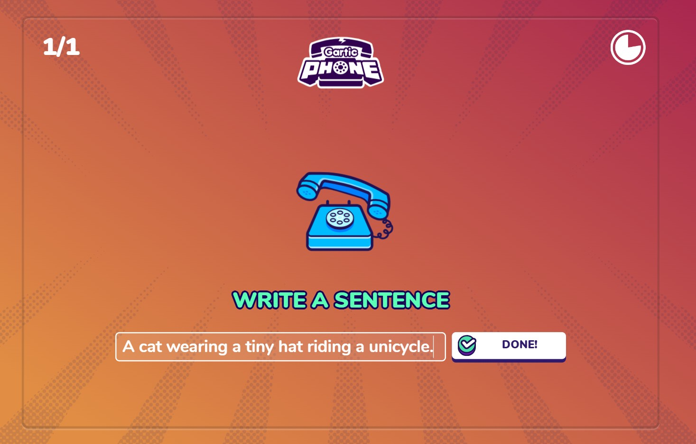
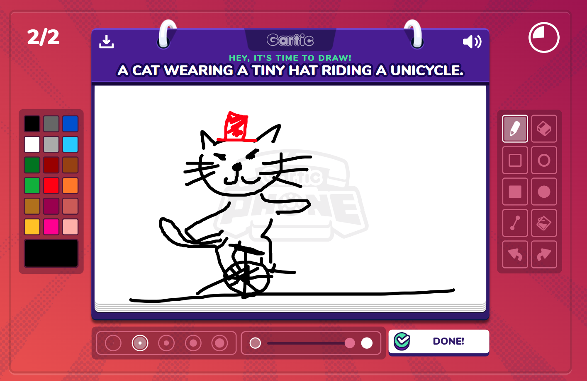
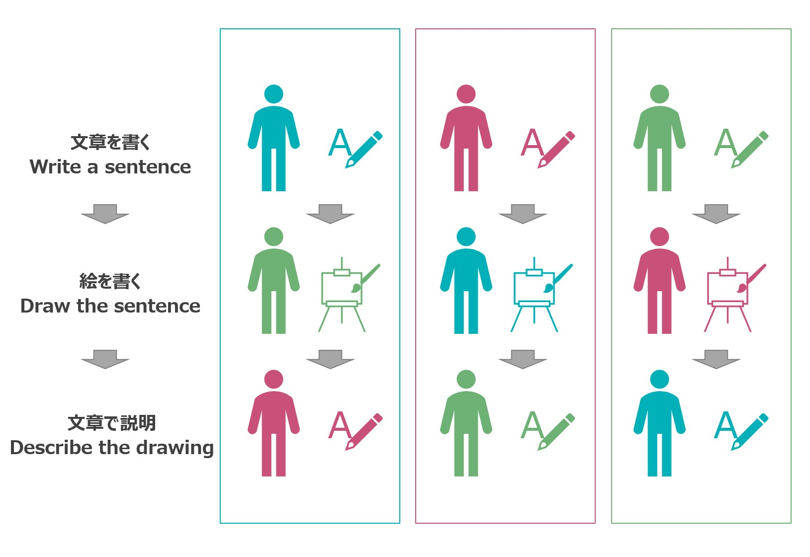
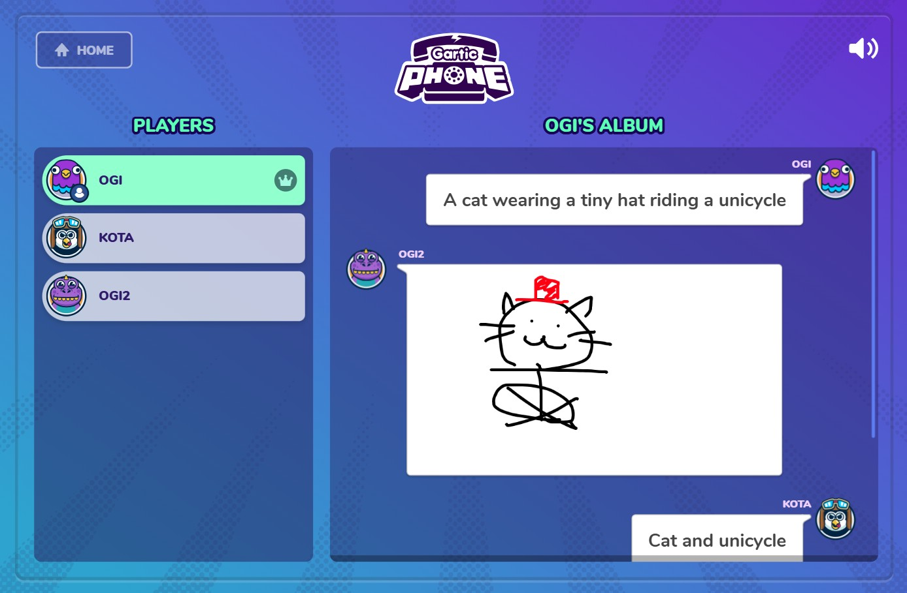

CBTF ゲーム企画 Gartic Phone
CBTF Game Event Gartic Phone
皆さん、こんにちは！
本日は、海外拠点のメンバーとの交流企画にご参加いただきありがとうございます。今回は、お絵かき伝言ゲーム「Gartic Phone」を使って、チームで協力しながら楽しみましょう！言葉の壁を越えて、クリエイティブなコミュニケーションを体験してください。
Hello everyone! Thank you for joining our exchange event. Today, we'll be playing the drawing and guessing game "Gartic Phone"! Let's have fun and get creative together, transcending language barriers.
タイムテーブル / Timetable (60min)
| 時間 (Time) | 内容 (Content) |
|---|---|
| 10 min |
オープニング & ゲーム導入 Opening & Game Introduction CBTFメンバーの自己紹介および企画目的の説明。 |
| 45 min |
ゲームプレイ Game Play ゲームをするときのお題を変えながら、2~3回プレイ。 |
| 5 min |
締め / Closing
全体の振り返り |
Gartic Phone ルール説明 /
How to Play Gartic Phone
Gartic Phoneは、「文章」→「絵」→「文章」→「絵」...と、交互に伝言していくゲームです。完璧な絵や文章は必要ありません！楽しむことが一番の目的です。
Gartic Phone is a game where you pass a message along, alternating between "Sentence" -> "Drawing" -> "Sentence" -> "Drawing"... Don't worry about perfect drawings or descriptions! The main goal is to have fun.
ゲームの流れ / How to Play
最初のプレイヤーが書いた「お題」が、みんなの「絵」と「文章」でどのように変化していくのかを楽しむモードです。
This mode lets you enjoy watching how the initial "theme" written by the first player transforms through everyone's "drawings" and "descriptions."
Step 1: 文章を書く (Write a sentence)
✏️A cat wearing a tiny hat riding a unicycle.
Step 2: 絵を描く (Draw the sentence)
Step 3: 文章で説明 (Describe the drawing)

✏️A cat wearing a hat standing on a watermelon.
Step 4: これを繰り返す (Repeat!)
参加者が3人の場合、完成する結果は3つです。人数が増えるとそれに応じて繰り返しの回数と完成する結果が増えます。
When there are 3 participants, 3 results will be completed. As the number of people increases, the number of steps and the completed results will increase accordingly.
最後に、全員で奇跡（？）の伝言結果を見て笑いましょう！最初の文章がどんな結末を迎えたか、お楽しみに！
Finally, we'll all watch the hilarious results together. See how the original sentence changed! 
コミュニケーションのヒント / Communication Tips
- 主語と述語を使ってより具体的な文章を書こう！ /
Let's try to write more specific sentences using subjects and predicates!
具体的に書くことでゲームのおもしろさがアップ！
Making the descriptions more specific adds complexity, which in turn enhances the fun of the game!- 小さな帽子をかぶった猫が一輪車に乗っている /
A cat wearing a tiny hat riding a unicycle. - ロボットがスパゲッティでセーターを編もうとしている /
A robot trying to knit a sweater with spaghetti. - 硬い瓶の蓋を開けようと奮闘している人 /
A person struggling to open a stubborn jar.
Example - 小さな帽子をかぶった猫が一輪車に乗っている /
- 絵はうまくなくてOK！ / Your drawing doesn't have to be perfect!
特徴を捉えて、シンプルに描くのがコツです。楽しんで描きましょう！
The key is to capture the main features. Just have fun drawing! - 想像力を働かせよう！ / Use your imagination!
不思議な絵が出てきても、面白く解釈してみましょう！
Even if you see a strange drawing, try to interpret it in a fun way! - リアクションを大切に！ / Reactions are important!
結果発表の時は、ぜひ声やチャットでリアクションして盛り上がりましょう！
During the reveal, let's make it exciting with our voices and chat messages!